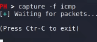

Primero como se forma un paquete ICMP:
El caso es modificar el paquete ICMP en tránsito mediante Polymorph.
Para esto nos situamos en medio de la comunicación mediante ARP spoofing por ejemplo.
Una cosa a tener en cuenta a la hora de realizar conexiones entre nodos en red virtual es que se omite el uso de un router como tal, se establecen conexiones de punto a punto.
Iniciamos polymorph e indicamos el objetivo y el gateway o puerta de enlace que en este caso es la máquina ubuntu.
ARP spoofing ya está establecido.
Ahora el paquete da 1 salto más hasta llegar a la máquina objetivo.
Capturamos paquetes ICMP

Pulsamos TAB y luego show
Podemos abrir los paquetes en Wireshark.
Seleccionamos el template
Podemos visualizar el contenido
Ahora tenemos esta plantilla correspondiente al paquete que vamos a modificar en tiempo real.
Añadimos una función en python.
Nombre de la función y editor de texto.
Ejecuta el editor con esa plantilla.
Con esto básicamente podremos sobre cualquier protocolo de red modificar y ejecutar el código que introduzcamos en tiempo real.
Por ejemplo un código que cada vez que se intercepte un paquete ICMP lo avise por pantalla.
Para ver las funciones añadidas.
Interceptamos.
Hacemos una prueba.
Por ejemplo para modificar el paquete.
Añadimos que modifique los últimos 8 dígitos del paquete en su parámetro data.
Como solo se modifica el paquete replay y no el response al no coincidir la cadena de datos la máquina interpreta que no se está realizando la conexión.